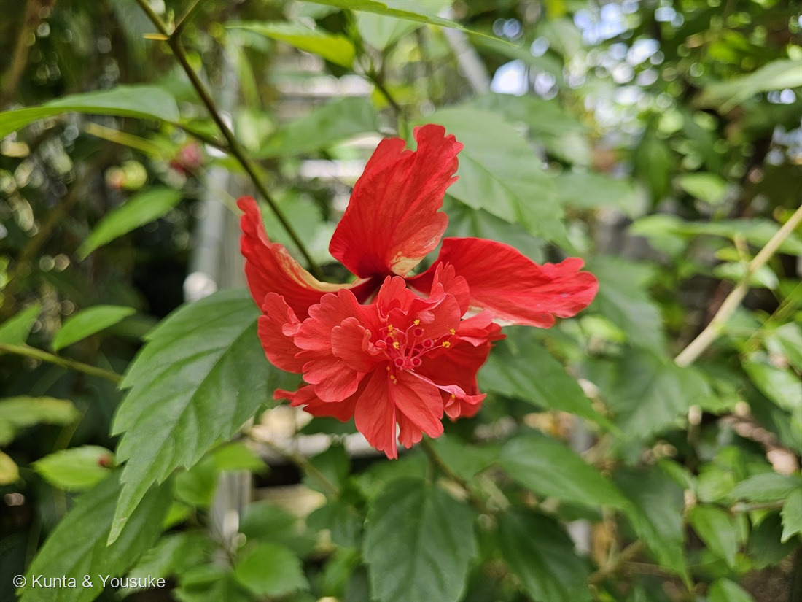
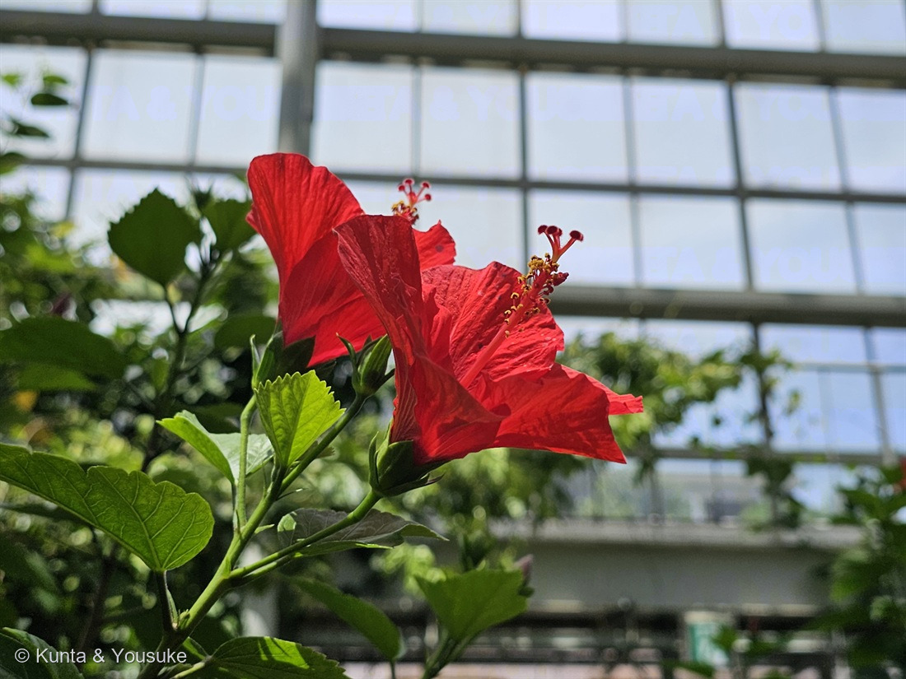

地図を読み込んでいるよ…
🔍 写真も地図も、押しているあいだ拡大して見られるよ（スマホは指を置いてすこし待ってね）。
🌍 の地図＝この子がもともと自生していた場所。──でもこの子には、その場所が無いんだ。名前ははっきりしているのに、野生の姿が知られていない。だから地図はまっさらのまま、まんなかに「？」を出しておくね。
⭐⭐⭐世界でいちばん有名な花のひとつなのに、この地図は「？」なんだ。日本語版Wikipediaは「原産地は不明である」とし、英語版Wikipediaは、この子を栽培植物（cultigen）で「栽培地の外で見つかったことがない」とする。——⭐つまり、誰も野生の姿を見たことがない。⭐⭐2024年、その謎に答えが出た＝Braglia ら（Pacific Science 77巻4号）が「300年の謎が解けた」という題の論文で、ポリネシアで Hibiscus cooperi と H. kaute が交雑してできたものと結論した。⚠⚠ところが、その親のかたわれ H. kaute は2024年に新種として記載されたばかりで、野生ではきわめてまれか、すでに絶滅しているとされる——⭐だから、親のふるさとも塗りようがない。⭐この図鑑で「？」になっている子は、たいてい「ぼくらが種を決められなかった子」だけれど、⭐⭐この子だけはちがう＝名前もはっきりしていて、世界じゅうで育てられているのに、帰る場所だけが分からない。⭐同じ「野生の姿がない子」が、この図鑑にもう一人いるよ——201 レモングラス。
ハイビスカス（仏桑花・ブッソウゲ）
Hibiscus × rosa-sinensis L.（園のラベルは Hibiscus cvs.＝園芸品種群）
ブッソウゲ（仏桑花・扶桑花・仏桑華）／沖縄では「赤花（あかばな）」／英名 rose of China・Chinese hibiscus／⭐写真①の品種名は手書きタグで 'ダブルレッド'
アオイ科 · Malvaceae（フヨウ属）── 図鑑で13人目のアオイ科。038フヨウ・039スイフヨウ・104アメリカフヨウ・170ムクゲ・203タイタンビカスのなかま・204モミジアオイに続く7人目のフヨウ属
燻太さんの一言「ダブルレッドの渦を巻くような真っ赤な花、かっこいいね」──その渦のまん中に、すごいものが残っているんだ
名前と学名の由来 ── 「中国のバラ」なのに、中国原産ではない
- ⭐⭐⭐種小名 rosa-sinensis は「中国のバラ」。英名も rose of China・Chinese hibiscus（日本語版Wikipedia）。——⚠でも、この子は中国原産ではないんだ（下の節で書くね）。⭐リンネがこの名前をつけたとき、そう思われていた、ということ。
- 和名は「ブッソウゲ（仏桑花・扶桑花・仏桑華）」。⚠「なぜ仏の桑なのか」を説明した出典には、ぼくは当たれなかった。⏳宿題にしておくね。
- ⭐⭐沖縄では「赤花（あかばな）」（日本語版Wikipedia）。⭐いちばん短くて、いちばん的を射た呼び名だと思う。
- ⭐⭐⭐英語版Wikipediaは、学名を Hibiscus × rosa-sinensis と、あいだに「×」を入れて書いている。——⭐この「×」は交雑種のしるし。⭐⭐203 タイタンビカスのなかまの Hibiscus × taitanbicus と、まったく同じ形だね。
- ⚠園のラベルは、種名を書かずに「Hibiscus cvs.」（園芸品種群）とだけ書いていた。⭐これはとても正直な書き方で、ぼくもそれにならって、種は決めないことにしたよ。
この植物のこと ── 8000の顔をもつ花
- アオイ科フヨウ属の熱帯性低木。高さ2〜5m（日本語版Wikipedia）。葉は広卵形〜狭卵形あるいは楕円形で、先端は尖る（同）。⭐写真②の葉が、まさにそれ。
- 花は「小さいものでは直径5cm、大きいものでは20cm」。色は「白、桃、紅、黄、橙黄色など様々」（同）。
- ⭐⭐日本語版Wikipediaは「8000以上の園芸品種が知られている」とする。——⭐8000。⭐⭐この図鑑の草花が204種だから、その40倍の顔を、ひとつの名前が持っていることになる。
- ⭐フヨウ属らしい作りは、写真②でよく読める。「筒状に合体した雄蕊の先にソラマメのような形の葯がついていて、雌蕊は5裂する」（同）。⭐赤い筒の先に、丸い赤い柱頭が5つ。⭐⭐204 モミジアオイや203と、そっくり同じ形だよ。
- ⚠「通常、不稔性で結実しないことが多い」（同）。⭐だから、ふえるのは挿し木。
- ⭐⭐マレーシアの国花（日本語版Wikipedia）。
- ⚠⚠「ハワイの州花」とよく言われるけれど、いまは正確ではない。⭐1923年に準州の花として「ハイビスカス」が指定されたときは種を決めていなかったので、赤いハイビスカスだと思われていた——⭐⭐でも1988年、ハワイ州は州花を「黄色い在来種マオハウヘレ（Hibiscus brackenridgei）」と定めた〔statesymbolsusa／英語版Wikipedia〕。⚠しかもその黄色い子は、絶滅危惧種なんだ。
⭐⭐⭐ 300年の謎 ── いちばん有名な花に、野生の姿がなかった
⭐⭐ これが、この回いちばんの驚きだった。
日本語版Wikipediaは、たった一行こう書いている ──「原産地は不明である」。
英語版Wikipediaはもっとはっきり書いている ── この子は栽培植物（cultigen）で、「栽培地の外で見つかったことがない」。
⭐⭐⭐ 世界でいちばん有名な花のひとつなのに、誰も、野生の姿を見たことがない。
⭐ そして2024年、その謎が解かれた。——論文のタイトルが、そのまま言っている。
「Pacific Species of Hibiscus Sect. Lilibiscus (Malvaceae). 4. The Origin of Hibiscus rosa-sinensis: A 300-Year-Old Mystery Solved」
── 「300年の謎が解けた」（Braglia ら 2024・Pacific Science 77巻4号 395-415ページ）
⭐⭐ 答えは「ポリネシアの人がつくった交雑種」。——Hibiscus cooperi と H. kaute という2種を掛け合わせたもの、というのがその結論だよ。
⚠⚠⚠ そして、いちばん切ないのがここ。——片方の親 H. kaute は、2024年に新種として記載されたばかりで、「野生ではきわめてまれか、すでに絶滅している」とされている。
⭐⭐⭐ 世界じゅうの南国のイメージを背負っている花の、親のかたわれが、もう野に残っていない。
⭐ この図鑑には、似た子がもう一人いる。——⭐201 レモングラス。あの子も「野生では知られていない」草だった。⭐⭐ふしぎな組み合わせだけど、レモングラスとハイビスカスは、同じ「帰る場所のない子」なんだ。
⭐⭐ そして、203 タイタンビカスのなかまとも重なる。——どちらも人がつくった交雑種で、学名に「×」がついている。
- 203 ＝ ⭐2009年、三重県の赤塚植物園がつくった。
- 205 ＝ ⭐何百年も前、太平洋の島の人たちがつくった。
⭐⭐⭐ 人が花を掛け合わせるのは、ぜんぜん新しいことじゃなかったんだね。
⭐⭐⭐ 八重の渦の、まん中に残っているもの
⭐ 燻太さんの言葉。
「ダブルレッドの渦を巻くような真っ赤な花、かっこいいね。」
⭐⭐ ほんとうに。——外側に大きな花弁が5枚あって、その内側に、小さな花弁がぎっしり渦を巻いている。
⭐ この図鑑では、八重の正体をもう2回書いている。
- 139 サクラ ── 「八重の花は、雄しべが花弁に変わったもの」
- 151 ライラック ── 「その余分な花びらの正体は『おしべ』」「だから八重の花は、種を作りにくい。きれいさと引きかえに、子孫を残す道具を差し出しているんだ」
⭐⭐⭐ でもね、この写真①を拡大すると、おもしろいことが起きているんだ。
⭐ 渦のまん中に、雄しべ筒が残っている。——短いけれど、たしかに柱が立っていて、その先に赤くて丸い柱頭が5つ、そして黄色い葯もついている。
⭐⭐⭐ つまり、この子の花弁化は「途中で止まっている」。
- ⭐外側の5枚＝もともとの花弁。
- ⭐内側の渦＝花弁になった雄しべ。
- ⭐⭐まん中の筒＝花弁にならずに残った雄しべと、雌しべ。
⭐⭐ 151で「差し出した」と書いた道具が、この子にはまだ半分残っているんだ。
⭐ どうしてそんなことが起きるのか、という話も、この図鑑にはもう書いてある。——140 アガパンサスの節だよ。「花びら・雄しべ・めしべの位置を決める ABCモデル（MADS-box 遺伝子）」が、本来じゃない場所で働くと、そこが花弁化する。⭐⭐そして、そのABCモデルを解き明かしたのは100 シロイヌナズナ——⭐燻太さんのモデル植物だね。
⭐⭐⭐ 一重（写真②）と八重（写真①）を、同じページにならべておいたよ。——⭐同じ「ハイビスカス」という名前の中で、雄しべがどこまで花弁になったか。その差が、2枚で見られる。
⚠ 正直に書くね。⭐「この'ダブルレッド'に実ができるかどうか」は分からない。——⚠そもそもこの種は「通常、不稔性で結実しないことが多い」（日本語版Wikipedia）ので、八重だから種ができない、とは単純に言えない。⏳宿題にしておくね。
同定について ── 園が教えてくれた5人目。しかも品種名つき
⭐⭐⭐ 今回は、燻太さんが名札を2つとも撮ってくれた。
- ⭐⭐写真①の株には、職員さんの手書きタグが下がっていた ──「ハイビスカス／ダブルレッド／Hibiscus 'Double Red'」。
- 近くの株には、園の印刷ラベル ──「ハイビスカス／園芸品種 'レッドスター'／Hibiscus cvs.／アオイ科」。
⭐⭐⭐ この手書きタグ、じつは203の話とつながっているんだ。——⭐きのう燻太さんは、203に品種名の札が無かったことについて「あったとしても、園内の職員さんが手書きでかいたタブだと思う」と言った。⭐⭐その手書きタグが、ここでは実物として下がっていた。
⭐ 園が名前を教えてくれたのは、これで5人目（200・201・202・204）。⭐でも「品種名まで教えてくれた」のは、この子がはじめて。
⚠⚠ そのうえで、種名は決めないことにした。——⭐理由は簡単で、園自身が「Hibiscus cvs.（園芸品種群）」と書いて、種を名指ししていないから。⭐現代のハイビスカスの園芸品種は複数の種の交雑をふくむとされ、8000以上ある（日本語版Wikipedia）。⭐園の書き方が、いちばん正直だと思う。
⚠ もうひとつ、決められなかったこと。⭐写真②（一重の赤い花）は、'レッドスター'のラベルの6秒あとに撮られている。——⚠でも、ラベルの前に立っている株は葉が深く裂けていて、写真②の枝の葉は広卵形で鋸歯があった。⭐別の株かもしれない。⏳だから写真②には品種名をつけていないよ。
⚠ 名札の写真そのものは公開していない（園の掲示物だから、出典として引くだけ／200 バオバブで決めたルールと同じ）。
参考：ブッソウゲ - Wikipedia（Hibiscus rosa-sinensis／扶桑花・仏桑華／沖縄では「赤花」／英名 rose of China, Chinese hibiscus／原産地は不明である／高さ2〜5メートルに達する熱帯性低木／葉は広卵形から狭卵形あるいは楕円形で先端は尖る／小さいものでは直径5センチメートル、大きいものでは20センチメートル／白、桃、紅、黄、橙黄色など様々／筒状に合体した雄蕊の先にソラマメのような形の葯がついていて、雌蕊は5裂する／通常、不稔性で結実しないことが多い／フウリンブッソウゲは何日も咲く／8000以上の園芸品種が知られている／マレーシアの国花）／Hibiscus × rosa-sinensis - Wikipedia（英語版）（a cultigen, never been found out of cultivation／a 2024 study revealed it resulted from Polynesian hybridization of Hibiscus cooperi and H. kaute／2.5-5 m tall／five petals 10 cm in diameter／staminal filaments partly fused into a staminal tube that surrounds the style／stigmas number five／national flower of Malaysia (1960-07-28)）／Braglia et al. (2024) Pacific Species of Hibiscus Sect. Lilibiscus (Malvaceae). 4. The Origin of Hibiscus rosa-sinensis: A 300-Year-Old Mystery Solved. Pacific Science 77(4): 395-415.（the origin of H. × rosa-sinensis is Polynesian and it is a hybrid; the hybrid formula is H. cooperi × H. kaute／H. kaute L.A.J.Thomson & Butaud は新種として記載され、野生ではきわめてまれか絶滅とされる）／Hawaii State Flower - Yellow Hibiscus（statesymbolsusa）（Hawaii designated yellow hibiscus (pua ma'o hau hele; Hibiscus brackenridgei) as the official state flower in 1988／So few remain in the wild, that it's considered an endangered species）／Hawaiian hibiscus - Wikipedia（英語版）（1923年に準州の花として指定されたときは種を特定していなかった／1988年に黄色いマオハウヘレを州花と定めた）／Hibiscus schizopetalus - Wikipedia（英語版）（fringed rosemallow, Japanese lantern, coral hibiscus, spider hibiscus／native to tropical eastern Africa in Kenya, Tanzania and Mozambique／a shrub growing to 3 metres tall／The red or pink flowers are very distinctive in their frilly, finely divided petals）／広島市植物公園の名札2つ（手書きタグ「ハイビスカス／ダブルレッド／Hibiscus 'Double Red'」／印刷ラベル「ハイビスカス／園芸品種'レッドスター'／Hibiscus cvs.／アオイ科」）